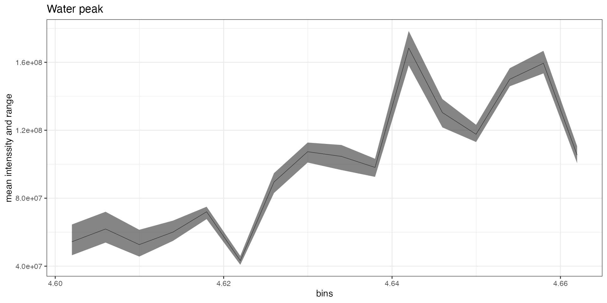
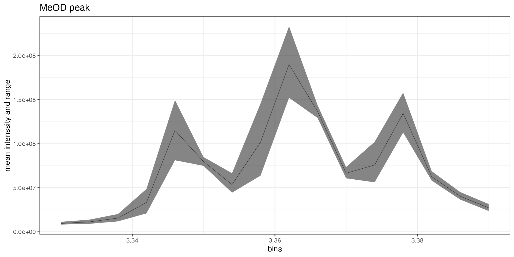
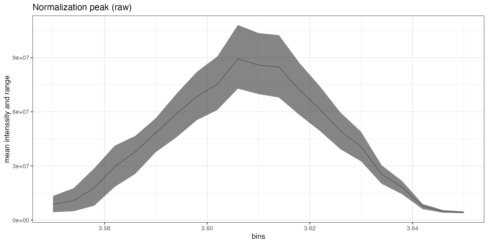
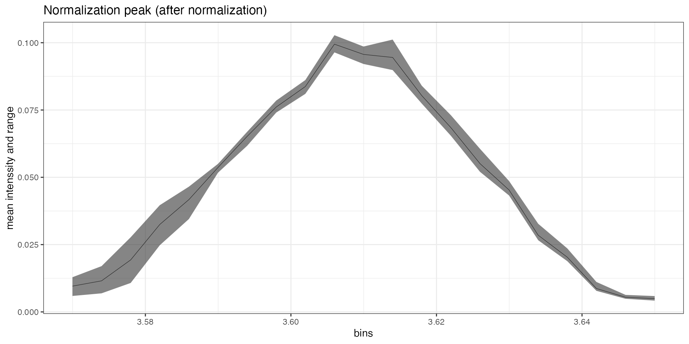
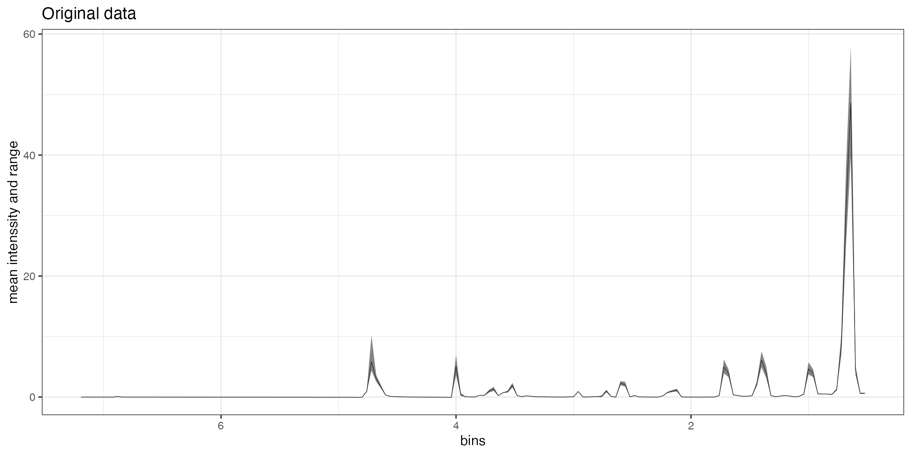
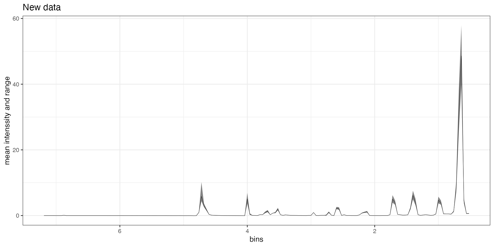

In this example we will process the example data fa_nmr to build a simple PC-LDA classificator. As this dataset includes only three spectra of each category don’t expect wonders, the aim of this vignette is simply to guide you through a workflow.
##Pre processing NMR spectra
This package comes with an example dataset, already loaded as a collection. This dataset contains H1-NMR spectra for fatty acids of egg yolks. The spectra were pre-processed using TopSpin: * Phasing * Baseline removal * Spectral alignement * Export as .txt files
Each exported file looked like this :
# File created = <DATE>
# Data set = <NAME> 10 1 <"Path/to/folder">
# Spectral Region:
# LEFT = 14.931500434875488 ppm. RIGHT = -5.284929038283497 ppm.
#
# SIZE = 262144 ( = number of points)
#
# In the following ordering is from the 'left' to the 'right' limits!
# Lines beginning with '#' must be considered as comment lines.
#
83549.0
83274.0
83057.0
...Here is how this data was loaded as a collection:
require(purrr)
# First we get a list of the files in the spectra folder
files <- file.path(INPUT_FOLDER, list.files(INPUT_FOLDER))
# Then we create a simple parser to read the data form the files
parse_file <- function(path){
meta_raw <- readLines(path, n = 10, ok = FALSE)
dataset <- unlist(strsplit(meta_raw[2], " "))[5]
left <- as.numeric(unlist(strsplit(meta_raw[4], " "))[4])
right <- as.numeric(unlist(strsplit(meta_raw[4], " "))[8])
vals <- read_tsv(path, col_names = c("values"), comment = "#", col_types= "d")
return(list(id = dataset, left = left, right = right, values = vals$values))
}
# Finally we load each spectra and add it to a collection
fa_nmr <- collection()
walk(files, ~ {parsed <- parse_file(.x)
fa_nmr <<- fa_nmr %>% add_spectrum(parsed$values,
parsed$left,
parsed$right,
parsed$id)})
# We can also load labels for a file to add the to the collection
labs <- read_tsv(LABELS)
fa_nmr <- add_labels(fa_nmr, labs, ids_from = "sample", labels_from = "label")Let’s set up things here. We will need the tidyverse and tidymodels packages for this example
library(tidyverse)
#> ── Attaching packages ─────────────────────────────────────── tidyverse 1.3.0 ──
#> ✔ ggplot2 3.3.3 ✔ purrr 0.3.4
#> ✔ tibble 3.0.6 ✔ dplyr 1.0.4
#> ✔ tidyr 1.1.2 ✔ stringr 1.4.0
#> ✔ readr 1.4.0 ✔ forcats 0.5.1
#> ── Conflicts ────────────────────────────────────────── tidyverse_conflicts() ──
#> ✖ dplyr::filter() masks stats::filter()
#> ✖ dplyr::lag() masks stats::lag()
library(tidymodels)
#> ── Attaching packages ────────────────────────────────────── tidymodels 0.1.2 ──
#> ✔ broom 0.7.4 ✔ recipes 0.1.15
#> ✔ dials 0.0.9 ✔ rsample 0.0.8
#> ✔ infer 0.5.4 ✔ tune 0.1.2
#> ✔ modeldata 0.1.0 ✔ workflows 0.2.1
#> ✔ parsnip 0.1.5 ✔ yardstick 0.0.7
#> ── Conflicts ───────────────────────────────────────── tidymodels_conflicts() ──
#> ✖ scales::discard() masks purrr::discard()
#> ✖ dplyr::filter() masks stats::filter()
#> ✖ recipes::fixed() masks stringr::fixed()
#> ✖ dplyr::lag() masks stats::lag()
#> ✖ yardstick::spec() masks readr::spec()
#> ✖ recipes::step() masks stats::step()
library(discrim)
#>
#> Attaching package: 'discrim'
#> The following object is masked from 'package:dials':
#>
#> smoothness
library(tidySpectR)
#>
#> Attaching package: 'tidySpectR'
#> The following object is masked from 'package:tidyr':
#>
#> extract
data(fa_nmr)First remove the water and solvent (MeOD in this case) peaks and trim the edges of the spectra to the interessant region.
spectra <- fa_nmr
tidySpectR::extract(spectra, 4.6, 4.66) %>%
autoplot(type="average") +
ggtitle("Water peak")

This looks good so we can proceed to masking the peaks, these will be effectivally removed from the dataset (not set to zero).
We can now proceed to normalizing the spectra using normalization to a given peak. You could also normalize with external values (Osmolarity, concentrations, …), check the normalize_factor method for that.
First we will check the normalization peak to be sure that we include all of it.
spectra %>%
tidySpectR::extract(3.57, 3.65) %>%
autoplot(type="average") +
ggtitle("Normalization peak (raw)")
Looking good, let’s proceed and check the result.
spectra <- normalize_internalStandard(spectra, 3.57, 3.65)
spectra %>%
tidySpectR::extract(3.57, 3.65) %>%
autoplot(type="average") +
ggtitle("Normalization peak (after normalization)")
We can now bucket (or “bin”) the spectra. In this example we will use a very simple uniform binning but more sophisticated methods are implemented.
spectra <- bucket_uniform(spectra, width = 0.04)
spectra %>%
autoplot(type = "label_average", offset_x = 0.5, offset_y = 5 ) +
ggtitle("Processed spectra")And here are the processed spectra!
Note that the spectra in this dataset were pre-bucketted. In real life the data would be several time bigger and the bucketting process can be pretty slow. We could speed it up using multiprocessing:
library(future)
cl <- makeClusterPSOCK(8)
plan(cluster, workers = cl)
spectra <- bucket_uniform(spectra, width = 0.04)
stopCluster(cl)Now that we have processed our spectra we can go on to the modelling part. For this we will rely on the tidymodels workflow. First we will scale the spectra using Pareto scaling and perform PCA on the predictors.
# Export the spectra in a tidy format
df <- tidy(spectra)
rec <- recipe(df, label ~.) %>%
update_role(id, new_role = "ID") %>%
step_pareto(all_predictors()) %>%
step_nzv(all_predictors()) %>%
step_pca(all_predictors(), threshold = 0.95)
mod <- discrim_linear(mode = "classification") %>%
set_engine("mda")
wflow <- workflow() %>%
add_recipe(rec) %>%
add_model(mod)
fitted <- fit(wflow, df)
print(fitted)
#> ══ Workflow [trained] ══════════════════════════════════════════════════════════
#> Preprocessor: Recipe
#> Model: discrim_linear()
#>
#> ── Preprocessor ────────────────────────────────────────────────────────────────
#> 3 Recipe Steps
#>
#> ● step_pareto()
#> ● step_nzv()
#> ● step_pca()
#>
#> ── Model ───────────────────────────────────────────────────────────────────────
#> Call:
#> mda::fda(formula = ..y ~ ., data = data, method = mda::gen.ridge,
#> keep.fitted = FALSE)
#>
#> Dimension: 1
#>
#> Percent Between-Group Variance Explained:
#> v1
#> 100
#>
#> Degrees of Freedom (per dimension): 1.921826
#>
#> Training Misclassification Error: 0.33333 ( N = 6 )It looks like we managed to missclassify one sample, this would probably improve by increasing the sample number and optimizing the preprocessing.
When you go to production, you’ll want to use the same pre-processing steps on new samples. While this is straigthford for all the read masking operations it can become difficult when you use more sophisticated bucketting algorithms.
Fortunately it is possible to extract the bucketting values from existing collections and apply them to new ones.
new_dat <- fa_nmr
# Extracting the bucket limits from the previous analysis
buckets <- pull_breaks(spectra)
new_dat <- tidySpectR::extract(new_dat, 0.5, 7.2) %>%
mask(4.6, 4.66) %>%
mask(3.33, 3.39) %>%
normalize_internalStandard(3.57, 3.65) %>%
# Applying the bucket limits:
bucket_from_breaks(buckets) And done! Let’s check that we got the same thing out of both processes:
autoplot(spectra, type = "average")+
ggtitle("Original data")
autoplot(new_dat, type = "average")+
ggtitle("New data")